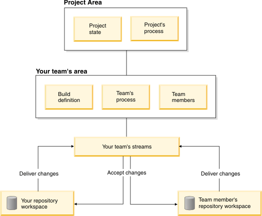

This topic includes the following sections:
Rational Team Concert™ artifacts are stored in a repository , which can be accessed only by authorized users .
The repository contains project areas that reference the artifacts for a project. Each project area has an associated process , which governs how the project is run and customizes the way Jazz™ behaves. The process is defined by a process configuration and a process description. The process configuration defines the project's iterations and how it behaves during these iterations. The process description corresponds to a Web site explaining the process.
There are several predefined processes to choose from: Scrum, OpenUp, and Simple. But you can also define your own processes or modify an existing one. For more information, see Process templates.
From within a project area, you have access to the project's artifacts.
Project Areas are decomposed into a set of team areas , which describe the teams that work on the project. Each team area has a list of team members and the process role they play within the team. A user can be a member of more than one team. Each team area can define process customizations to tailor the process for the team and its subteams.
For simple projects, all activity is on a single, main timeline with a single stream. Additional timelines can be created for things like maintenance activities. Each timeline has its own team areas and process customizations.
The planned work is described by work items . The types of work items used in a project area are defined by the process. For example, the Scrum process defines the following work item types:
Each work item type can have its own state transitions and custom fields. Work items are filed against work item categories , which allow you to organize work items by functional areas. Each project area defines the list of available work item categories. Each team area is associated with the work item category for the functional area for which the team is responsible.
You can find work items by executing queries . Queries can be private for you or shared with the team.
The work in a project area is done in a sequence of iterations . Each iteration can have a start and end date. One of the iterations is defined as the current one by the process. When planning the work, you target a work item for a particular iteration. You can plan all the work that should go into an iteration by creating an iteration plan . You can plan the overall work for a release that is broken down into iterations in a release plan .
You use a personal repository workspace to work on project files that are under source control. You load the repository workspace to copy the files and folders on your computer. The Jazz Team Server tracks all changes made to source-controlled files with change sets . Each change set contains changed files and folders, carries a comment, and references the associated work items that motivated the changes. You check in your change sets to upload the modified files and folders from your IDE workspace to the repository workspace. Checked-in change sets are stored in the repository, but are not yet shared with the rest of the development team until you deliver the change sets. The check-in and deliver process provides extra protection for your changes, while giving you the flexibility to continually make changes without delivering immediately.
Teams use a stream to store the master copy of project files; each repository workspace holds a copy. A repository workspace and the team's stream are connected by a flow. You deliver change sets from your repository workspace to the stream to incorporate your changes into the master copy; these are outgoing change sets. Incoming change sets are those that have been delivered to the stream by other team members. You accept incoming change sets to incorporate their changes into your repository workspace and your IDE workspace.
The source-controlled file base is built up from the steady accumulation of change sets, each one building on everything that has come before it. The change history is the sequence of change sets for a repository workspace or stream.
The source-controlled file base can be partitioned into one or more separate components , each with their own tree of folders and files, and their own change history. Simple repository workspaces and streams consist of a single component. Multiple components are useful for teams building layered software in which the pieces evolve semi-independently and are deployed separately.
You create a baseline of an individual component in a repository workspace to capture an interesting point in time, or create a snapshot to capture simultaneous baselines across all components.
Each team can have its own build , described in a build definition associated with the team area. The build definition specifies the build interval, which build script to use, and which repository workspace to be used for fetching files. A build can be run on different build engines . A build can be promoted to a release. Users can then file work items against a particular release.
You can use feeds to be aware of what your colleagues are working on, or what's happening on other teams. As artifacts in the repository are modified, event notices are automatically sent out to the feeds.
You can work in Rational Team Concert in any of the following client user interfaces:
Did this help? You can provide feedback at Jazz.net (registration required): or